2016总结及2017发展规划
段洪义
2017年01月13日
2016年已经结束，回首全年，物联网迈向2.0时代，全球生态系统将加速构建。
在我国，物联网的发展过去一直处于政府主导与重点保护阶段，新一届政府将物联网作为重点产业打造，十三五规划中明确提出“要积极推进云计算和物联网发展，推进物联网感知设施规划布局，发展物联网开环应用”。
随着物联网应用示范项目的大力开展，“中国制造2025”、“互联网+”等国家战略的推进，以及云计算、大数据等技术和市场的驱动，将激发我国物联网市场的需求。
物联网时代宣告来临
Tech Data在7月推出了新的物联网实践，专注于例如制造业、物流业、零售业和智慧城市的聚合。
Amazon推出了AWS IoT Button，集成了Amazon Dash硬件，设备可以轻松且安全地与云应用及其他设备进行交互。
英特尔在8月的开发者大会上推出了Joule平台，用户可以把理念原型投入生产，只花费很少量的时间和开发成本。
收购、收购……越来越多的收购，赛普拉斯收购博通，诺基亚正式收购阿朗，思科收购Jasper，英飞凌收购Wolfspeed，软银收购ARM， IoT将呈爆发式增长……
今年6月份NB-IoT的标准冻结，华为、中兴联合国内三大运营商，在多地推广NB-IoT方案。
物联网将改变整个社会，它将在展会活动方面有很大的影响。未来万物互联，这将创造一种前所未有的效率与便利。
传统行业要想生存发展，必须主动拥抱物联网；移动互联网公司也必须深入传统行业，不断变革创新。
物联网发展是一个有整合、有拓展、有创新，更广泛、更深入、更规范的过程。
人工智能使物联网插上了想象的翅膀，越来越多的人工智能设备，将极大的提高人民的生活质量。
我们度过了非常艰难的一年，对于业务而言我们开始了艰难的转型，从移动互联网应用向关注大众生活的物联网服务的转型；回望过去，来之不易；展望未来，我们仍需坚持。
回望2016
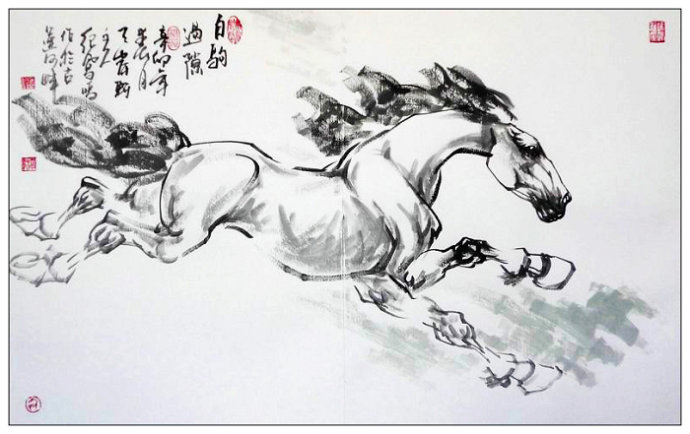
他们在做什么?
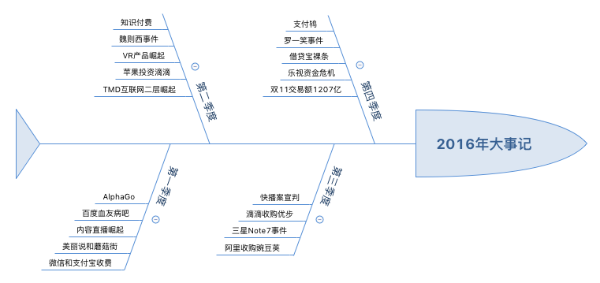
物联网元年
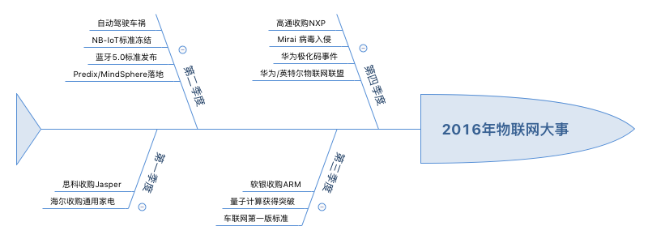
那些具有深远影响的技术
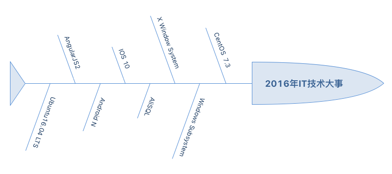
关于悠悠
运维
2016我们重新调整了运维策略，运维的工作重点从硬件虚拟化向服务化转变。
运维服务化目前包括包括：SDN（网络）、SDDC（数据中心）、SDS（存储）和SDI（基础架构）。
- 运维人员一条命令搞定整个集群的网络
- 一切行为异步化，管理更多的硬件资源
- 专门的配置管理系统，配置也能够升级
- 软件定义基础资源，监控每个服务资源
- 日志分析系统，助力故障修复灰度发布
- 工作从大数据向高并发下的大事物转移
基础服务
基础服务和虚拟化是实现软件即服务的基础。 2015年我们完成了基础服务的搭建，在2016年我们完成了全部核心业务的软件即服务转移。
- 划分数据基础服务类型：事务型、速度型
- 服务的自举，基础服务搭建在基础服务上
- 导航的基础资源逐渐向其他基础服务转移
- 为停车服务设计大量的可复用的基础服务
- 核心业务的无故障率已达到９９．９９％
移动互联网+消费电子=？
中国有两件事情在世界范围内都是属于绝对领先的地位：一是消费类电子；二是移动互联网。 从移动互联网到智能硬件，我们遇到了很多的坑：工业设计、结构设计、硬件选型、系统设计、驱动设计、物料质量。
- 车牌识别设备
- 智能票箱设备
- 道闸控制设备
- 车场收费网关
停车云系统架构图

软件云
任何一个使用基于互联网的方法来计算，存储和开发的公司，都可以从技术上叫做从事云的公司。 “云”其实是互联网的一个隐喻，“云计算”其实就是使用互联网来接入存储或者运行在远程服务器端的应用，数据，或者服务。
2016年，我们的发布的外网核心服务已经全部签至PAAS云。未来的路还很长，但是我们已经走出了第一步，运维的一小步，筑梦园的一大步。
WEB
2016年之前的web团队来讲有两个基本方向，Ｍobile和PC。 2016年我们在整个公司内部推广全栈的开发理念，Ｍobile和PC之间逐渐变得模糊。
- 响应似设计融入了日常的网页设计。
- 学习前端编程成为技术团队的一种风气。
- 目前技术团队的绝大多数人能够胜任简单的Web编码。
关于设计
风险驱动做适度的设计。 至下而上的构建，尽量不把架构设计活动从实现分离出来，同时减少甚至忽略架构文档。
- 开发人员开始学会基础的软件分层。
- 开发人员开始懂得风险驱动设计的意义。
- 设计的已经在潜移默化的影响到每一个人。
关于团队
走了很多人，来了一些人；学会了一些道理。好的团队是目标一致的团队，2016年各团队间的配合趋于完美。
- 运维
- 开发
- 测试
- 设计
- 产品
关于遗憾
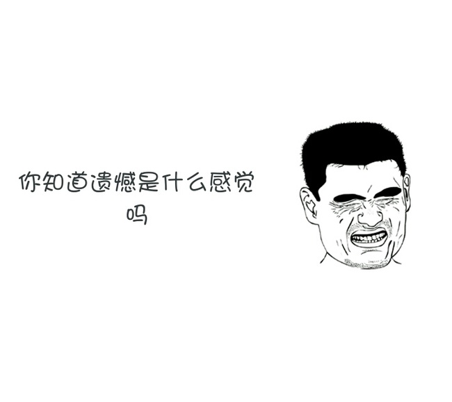
遗憾
前进的道路总会有一些遗憾，遗憾证明我们并不完美，我们仍需不断努力……
- 对风险的认识不足
- 我们的团队技术栈并不成熟
- 测试用例覆盖度远远不够
- 很多很多人为了生活而工作
- 设计会议中规定的约束执行的并不彻底
2016年结语
2017这场电影刚刚开始
关于运维
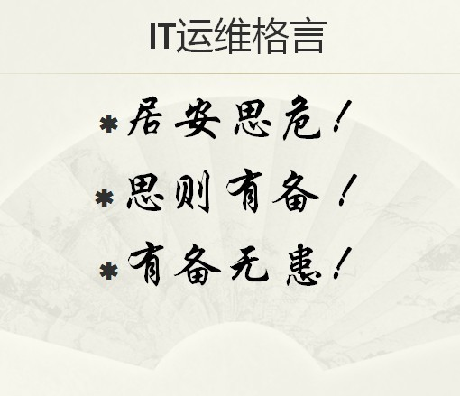
一切都是代码
将应用集装在Docker中，让DevOps充分发挥作用，更易于随着不断变化的需求对服务加以扩展。
- 将基础服务转移至容器中
- 在容器中包装一个微服务
- 为开发人员准备满汉全席
- 开发包罗万象的容器镜像
- 跟着工作流走的编排功能
关于云

停车云
关于2016，我们已经可以眺望到很多新兴的技术，其中最热门的无疑是大数据与物联网，而这两种技术的发展都离不开云计算这种基础技术的进步。
- 像编写剧本一样部署软件
- 一切状态可监控
- 自动故障恢复
- 优雅的扩容与回滚
基础服务
没有IAAS的PAAS就不能称其为PAAS，没有PAAS的SAAS就不能称其为SAAS。
- 避免服务孤岛一切皆为ＡＰＩ
- 将所有基础服务迁移到ＰＡＡＳ
- 提升基础服务的安全性注意隔离与保护
关于大数据
悠悠大数据容量图
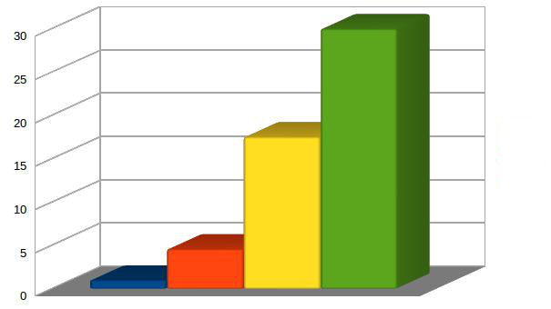
大数据
拨开云层，探究真相，寻找大数据真正的价值。
- 在停车领域应用大数据，为公司、产品、用户提供价值。
- 掌握大数据的标准，入口、汇集和整合过程。
- 让人与人、人与物、物与物之间实现高效撮合与匹配。
关于端
未来的服务，将形成以智能化商品为“端”，以远端后台为“云”的服务模式。 未来已经到来，只是还不显著。事实上，这样的“云+端”模式是物联网的核心。

Full Stack Developer
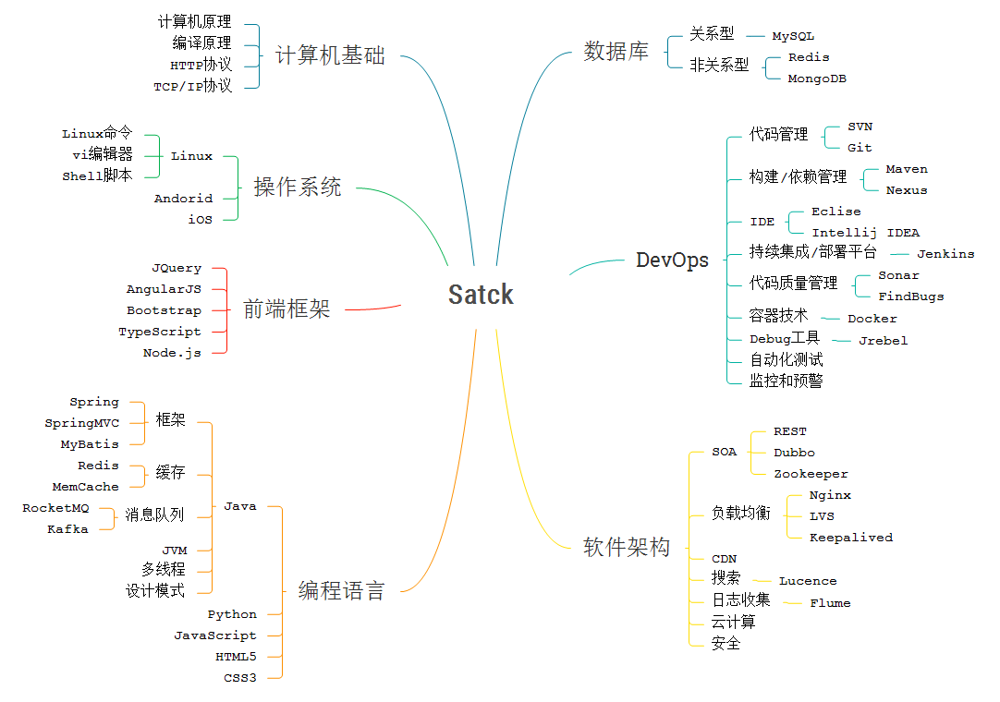
更多的关注物联网协议
物联网的通信环境有Ethernet，Wi-Fi，RFID，NFC（近距离无线通信），Zigbee，Dash7， 6LoWPAN（IPV6低速无线版本），Bluetooth，GSM，GPRS，GPS，3G，4G，NB—IOT等网络， 而每一种协议都有一定适用范围，开放性是选择的重要指标。
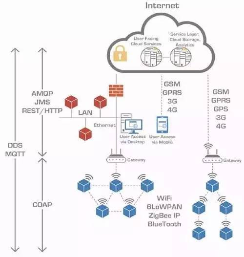
服务系统架构图
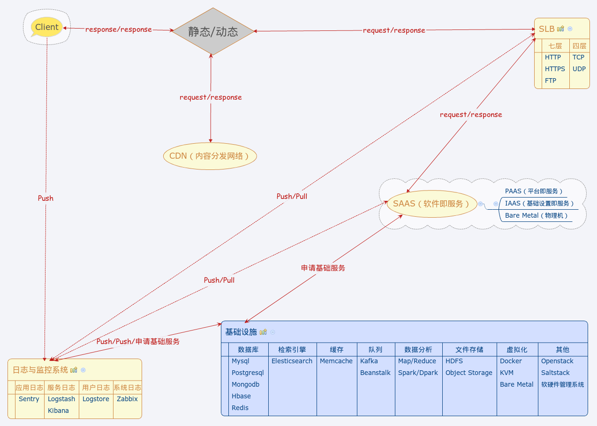
Teamwork
人们喜欢塑造偶像，然后把功劳都归功于寥寥的几个人，但世界不是这么运作的！
关于团队
建立学习型团队
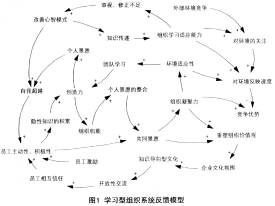
关于设计
架构设计师定义的仅仅是骨架或者约束。真正的设计是每个人的事情，蝴蝶效应告诉我们表面看来是细小的变化可能会影响整个系统的属性。
- 系统微服务化设计。
- 风险驱动做适度设计。
- 促进设计更广泛的民主。
Simple is better
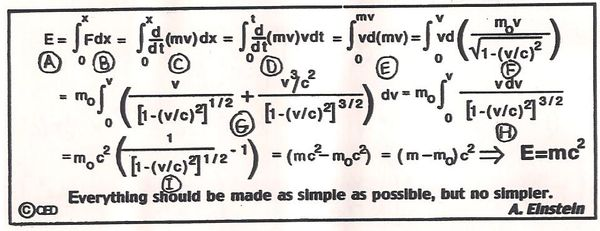
关于信息安全
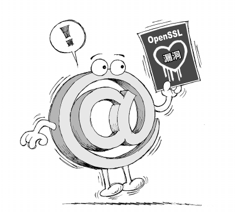
信息安全
信息安全与风险的领导者们必须全面掌握最新的科技趋势，才能规划、达成以及维护有效的信息安全与风险管理项目。 移动化、云端、社交、物联网与大数据所产生的“力量连结(Nexus of Forces)”在创造全新商机的同时也带来了更多令人头疼的破坏性问题。
- WAL日志存储与备份。
- 启用分布式事务数据库。
- 云端访问安全代理服务。
- 大数据信息安全分析智能判断威胁。
- 使用沙盒技术将每个服务与应用之间进行隔离。
2017 Keywords
敢问路在何方？路在脚下！
- 智能硬件
- 物联网
- 机器学习
- 云端架构
- 软件定义一切
- 大数据分析
- TDD
- 跨平台